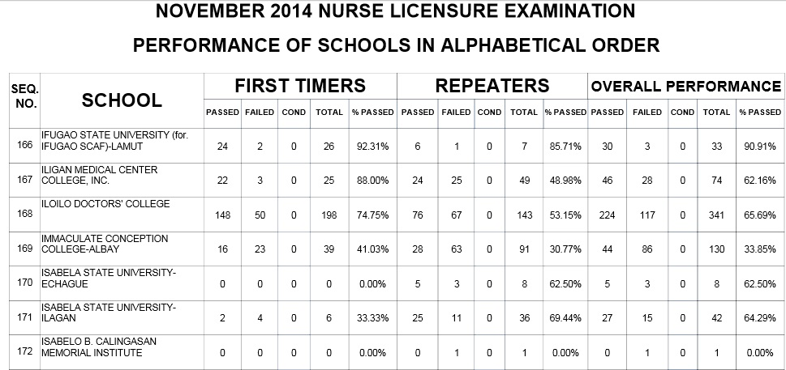
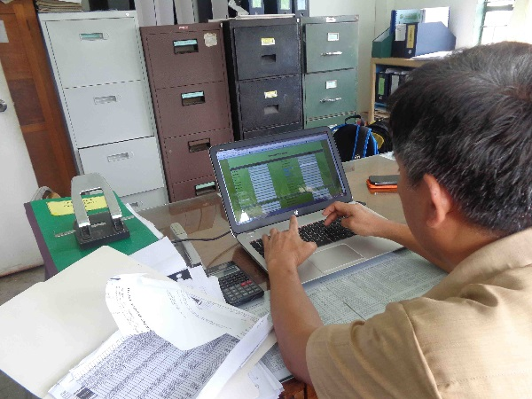

IFSU HYMN
Ifugao State University Visual Presentation
Ifugao State University Part 1
Ifugao State University Part 2
Ifugao State University Part 3
Ifugao State University Part 4
-
Human Resources
Human Resources Management System (HRMS) or Human Resources Information System (HRIS), refers... more
-
Log Cabin
A log cabin is a house built from logs. It is a fairly... more
-

Nature
Nature, in the broadest sense, is equivalent to the natural,... more
-

Flower
A flower, sometimes known as... more
-

Nursing Board Exam Result
Nursing Board Exam Result...more
-
Ifugao Satoyama Meister Trainees showcase research studies in RP-Japan Forum
Empowered through the Ifugao Satoyama Meister Training Program, the trainees showcased their... more
-
IFSU-Lagawe Campus Admin Building
The Admin Building... more
-

IFUS-Lagawe Campus HR
HR, Encoding employee records... more